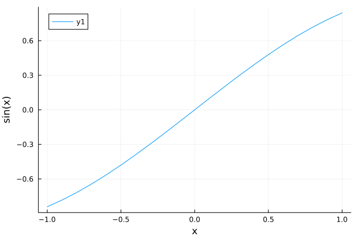
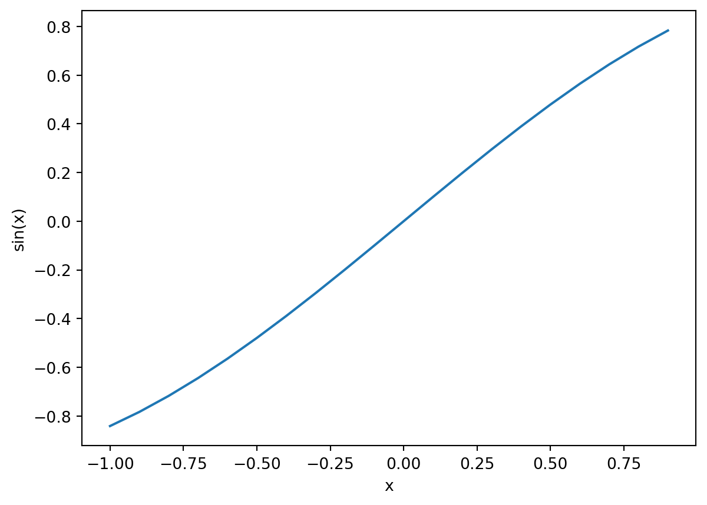

graph LR
A[TOOL] --> B(Matplotlib from python)
A --> C(Plots from julia)
A --> D(Wolfram Mathematica)
A --> E(Gnuplot)
A --> F(Libreoffice)
My Plotting Story - I
This is how I learned to plot
The Hard Way
In research there are 3 sequential processes that go through most of the time. They are enumerated as follows:
- Conceptualization
- Experimentation
- Data Curation
- Analysis
The writing of the manuscript is the advertisement and archiving part of the research for the successors to follow and extend it. I am not putting it in the list. I am going to talk about the Analysis part, where a major part goes to visualizing the data extracted from the experiment. Now this is not a tutorial that will answer your questions like - what is the best possible plot to make for a given set of data to have a meaningful illustration of the work? I would suggest to go through any statistics 101 course for that. Here I will talk about the technicalities of drawing a plot with the help computers. I learned it myself the hard way and I am archiving the story here so that you do not need to reinvent your wheel of plotting.
The Struggle
There are many tools as a software to plot beautiful scientific plots but each one of them comes with its pros and cons. I have tried all of them and found out the matplotlib a python package to be the most quickest and simplest to use. Although I will go through briefly why I am not going to discuss about the other tools elaborately.
Plots from Julia
Julia is one of my most favourite programming languages. I admire its functionality especially in scientific programming. But it comes with a limitation (although it has been dealt with pretty good in the modern julia versions). The time to the first plot (ttfp) is large. In plain english, it means that the first plot that you generate will be produced slow compared to the second and third plot. The reason here is julia being a just-in-time (JIT) compile language. I will give you a brief example how it looks in terms of syntax and also how the default output looks. For the improvement of ttfp in julia Plots library please have a look into the blogpost by the julia developer himself see https://viralinstruction.com/posts/latency/
using Plots
x = collect(-1:0.1:1)
y = sin.(x)
plot(x,y,xlab="x",ylab="sin(x)")
Pros
- It is really intuitive and simple.
- It has a good documentation for most kind of plots see the link https://docs.juliaplots.org/latest/tutorial/
- It has a huge amount of out of the box styles to be used for your particular purposes
Cons
Although the issue of ttfp has been addressed well in
v1.9and even more inv1.10but it is in news thatv1.11is doing again worse in terms of ttfp compared to the older versions. So you can see it is a bit of a reliability issue.The package for loading dataframes or in plain english simply data from let’s say
excelorcsvfiles is calledDataFrames. As we speak, I feel the package is not mature enough compared to the equivalent ones inpython.
Concluding remarks
If you are using julia for a simulation or an algorithm and you also want to plot some outcomes while running the simulation. Then I would say go for it. Because it would anyways take time so why not just use a functionality that is already given in the programming environment. But if you want it as a standalone data analysis tool then you might feel things are a bit slower.
Wolfram Mathematica
This is meant for a visual and computeresque mathematical tool made by a brilliant physicist Stephen Wolfram in 90s for symbolic computation (which basically means to have a translation of mathematics done in pen and paper to the computer screen). It became a bit of popular tool. But the worst part for the students is it is licensed and not open-source. Recent news although says how wolfram is giving free licenses for academic usage but only the headless environment. So basically the strength of mathematica lies in the notebook environment according to me. But if one does not get to use the notebook then it is a bit of a pity. So I would rather skip this section of syntax completely because the price might be a bit of a hurdle for the students.
Concluding remarks
I also plotted initially many of my research paper plots in mathematica. But sooner I realised scripting with wolfram is a bit of a hurdle especially when you need to plot many of them.
Gnuplot
Gnuplot has nothing to do with GNU (those who are familiar with linux or unix). It is a complete terminal based plotter. It is quite powerful. But the learning curve can be a bit high. I tried it in my masters and then also tried to use it in my PhD. Still it bothers me and always makes me google things which is a bit of a pain. I mean its okay to google things, but not okay to look into google to make even smaller stuffs. But it is definitely powerful but I feel it is outdated. I will skip this too.
Libreoffice
It is useful to make quick data charts to see some instant trends in your data. But for the publication it is less useful and the customization options are limited.
The Winner : Matplotlib
After testing all of these from above I found out that matplotlib is pretty intuitive and easily customizable. And also the packages that you need for data analysis is very rich in python due to its high applicability in the field. The syntax is pretty comfortable and easy to remember. At least you do not need to google all the time for a basic plot. It looks a bit like the following with the default output.
import numpy as np
import matplotlib.pyplot as plt
x=np.arange(-1,1,0.1)
y=np.sin(x)
plt.plot(x,y)
plt.xlabel("x")
plt.ylabel("sin(x)")
plt.show()
So I hope you got a bit of a flavour of how things are. I assume that you might be thinking that the output looks pretty basic. In the next blog post, I will go into the details of matplotlib of how it can be powerful and useful for academic publishing as well as day-to-day data analysis. Then I hope you will also be able to make very amazing and beautiful looking plots.